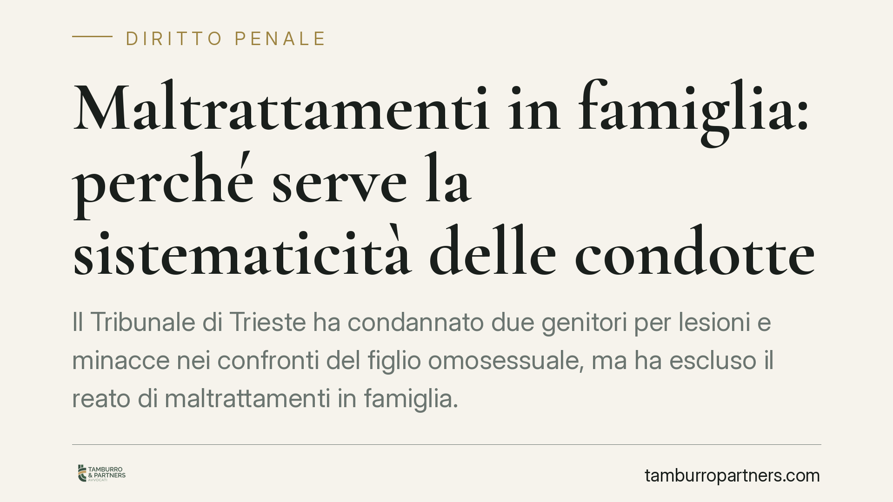

Maltrattamenti in famiglia: perché serve la sistematicità delle condotte
Il Tribunale di Trieste ha condannato due genitori per lesioni e minacce nei confronti del figlio omosessuale, ma ha escluso il reato di maltrattamenti in famiglia. La ragione: mancava la sistematicità delle condotte. Una decisione che aiuta a distinguere gli episodi violenti, per quanto gravi, dal maltrattamento abituale punito dall'art. 572 c.p. La differenza pesa sulla qualificazione del reato e sulla pena.

Il caso
Un giovane subisce dai genitori aggressioni e minacce, riconducibili al rifiuto del suo orientamento sessuale. Alla vicenda si aggiungono figure vicine alla vittima – la nonna e un'amica – coinvolte a diverso titolo nella ricostruzione dei fatti.
Il Tribunale di Trieste ha ritenuto provate le condotte di lesioni e minaccia, con applicazione dell'aggravante prevista per i reati commessi per finalità di odio o discriminazione. Ha però escluso il più grave reato di maltrattamenti in famiglia. Non per assoluzione nel merito degli episodi, ma per assenza di uno degli elementi che quel reato richiede: la sistematicità.
Inquadramento normativo
L'art. 572 del codice penale punisce chi "maltratta" una persona della famiglia o comunque convivente. La formula è sintetica, ma la giurisprudenza ne ha precisato i contorni. Il maltrattamento non è il singolo atto violento, né la somma occasionale di più episodi. È una condotta abituale, fatta di comportamenti reiterati che, valutati nel loro insieme, creano un clima di sopraffazione e sofferenza durevole.
In altre parole, serve un programma di vessazione che si protrae nel tempo. Il bene protetto non è solo l'integrità fisica – già tutelata da altre norme, come quelle sulle lesioni – ma la serenità del rapporto familiare, aggredita in modo continuativo.
Quando manca questa continuità, i fatti restano penalmente rilevanti, ma si qualificano come reati autonomi: lesioni (artt. 582 e seguenti c.p.), minacce (art. 612 c.p.), e simili. È esattamente ciò che ha fatto il Tribunale di Trieste.
Sul piano dell'aggravamento entra in gioco l'art. 604-ter c.p., che inasprisce la pena per i reati commessi con finalità di discriminazione o odio, tra cui quelli fondati sull'orientamento sessuale. L'aggravante colpisce il movente della condotta, indipendentemente dalla sua abitualità.
Implicazioni pratiche
La decisione ha un valore che va oltre il singolo processo. Chiarisce che la gravità di un episodio, presa isolatamente, non basta a integrare i maltrattamenti. Serve dimostrare la ripetizione e la persistenza di un atteggiamento vessatorio.
Questo ha ricadute concrete su chi denuncia. Chi lamenta condotte violente in ambito familiare deve essere consapevole che la qualificazione del reato – e quindi la pena e i tempi di prescrizione – dipende dalla natura del quadro complessivo, non solo dal fatto più grave.
Per la difesa, il tema è speculare: contestare la sistematicità può ricondurre i fatti a reati meno gravi, con effetti rilevanti sulla pena finale.
È importante non leggere la decisione come una minimizzazione della violenza. Il Tribunale ha condannato, e ha applicato l'aggravante di odio. Ha però applicato con rigore la norma, evitando di forzare la fattispecie dei maltrattamenti oltre i suoi presupposti.
Cosa fare in concreto
- Documentate ogni episodio: date, luoghi, testimoni, referti medici, messaggi. La ricostruzione della continuità delle condotte passa dalla qualità della documentazione.
- Non sottovalutate i singoli fatti: anche un episodio isolato di lesioni o minaccia è procedibile e può essere aggravato dal movente discriminatorio.
- Segnalate il contesto: nella denuncia descrivete il clima complessivo, non solo l'ultimo episodio. È l'insieme a orientare la qualificazione giuridica.
- Rivolgetevi tempestivamente a un legale: la scelta della fattispecie da contestare incide su procedibilità, misure cautelari e prescrizione.
- Conservate ogni riferimento al movente: elementi che collegano la violenza all'orientamento sessuale o ad altre condizioni personali possono radicare l'aggravante dell'art. 604-ter c.p.
Una lettura equilibrata
La sentenza di Trieste ricorda che il diritto penale distingue tra fatti che colpiscono e fatti che si strutturano nel tempo. Entrambi possono essere gravi. Ma solo i secondi integrano i maltrattamenti in famiglia. Comprendere questa differenza è utile sia a chi cerca tutela, sia a chi si difende.
---
*Contributo informativo a cura di Tamburro & Partners - Avv. Giuseppe Tamburro. Non costituisce parere legale.*
Ogni condominio ha una storia a sé.
Se gestisci un'amministrazione e vuoi un confronto su una specifica questione condominiale, scrivi allo studio. Ti rispondiamo entro un giorno lavorativo.